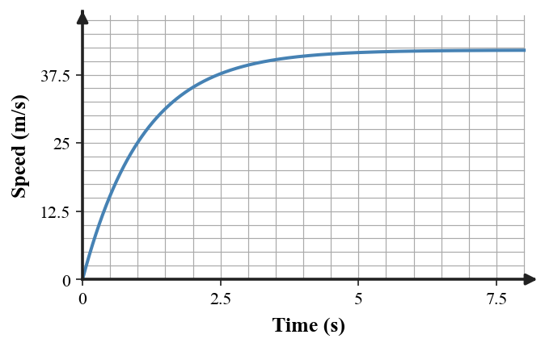
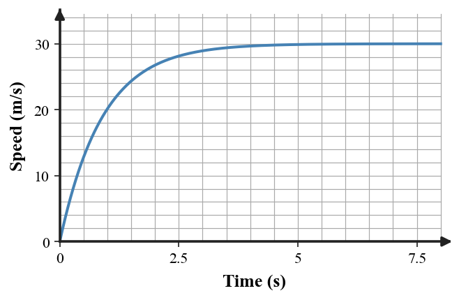
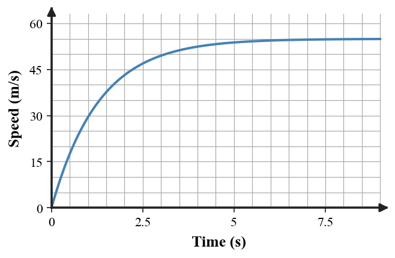
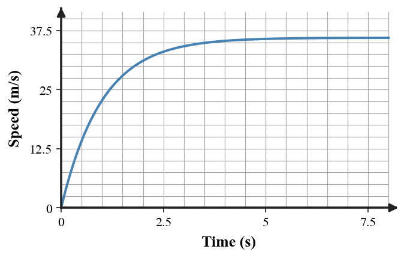
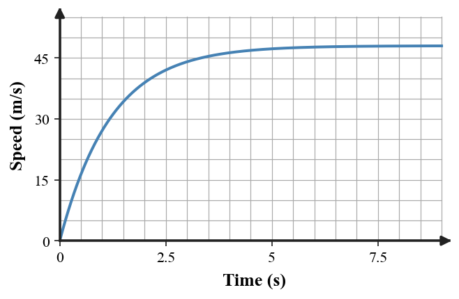
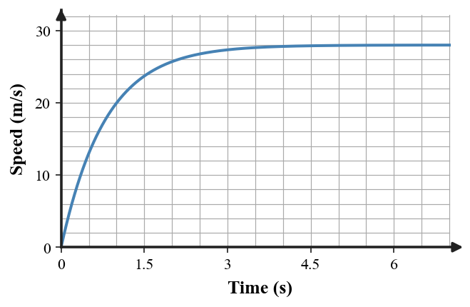
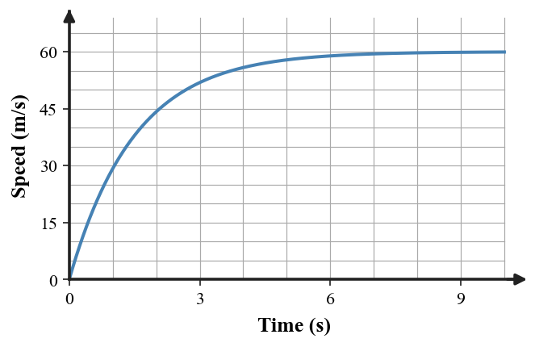
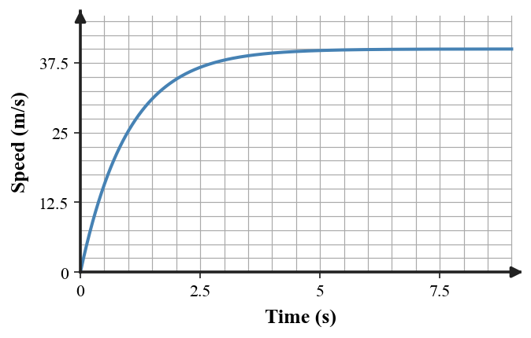

Directions: Answer questions 1–16 on the answer sheet. Complete questions 17–20 on the back of the answer sheet. Use $g\approx10\,\text{m/s}^2$ when needed unless another value is given. You may write on this assessment copy, but only the answer sheet gets graded.
1. [DOK 1 · Section 3.1] A box has 8 N left and 8 N right acting horizontally. What can be concluded about its acceleration?
A. It accelerates to the right because one force points right.
B. It accelerates to the left because one force points left.
C. It must be moving at constant speed to the right.
D. It must be at rest because the forces are equal.
E. The acceleration is zero because the horizontal net force is zero.
2. [DOK 1 · Section 3.2] Which quantity measures an object’s inertia and is measured in kilograms?
A. mass
B. weight
C. net force
D. support force
E. static friction
3. [DOK 1 · Section 3.3] A rock falls in a vacuum after being released. How should the motion be classified?
A. nonfree fall because it is accelerating
B. free fall
C. not free fall because there is no air
D. constant-speed motion
E. motion with no force
4. [DOK 1 · Section 3.4] A student pushes on a wall. Which force is the Newton’s Third Law partner to the student’s force on the wall?
A. skater B pushes skater A
B. car on bug and bug on car
C. the wall’s force on the student
D. water pushes the paddle and boat forward
E. the ball pushes on the bat
5. [DOK 1 · Section 3.5] A soccer ball is moving through the air after leaving the player’s foot. Ignore air resistance. Which description fits?
A. It is not a projectile because the foot is no longer pushing it.
B. It moves at constant velocity because no contact force acts.
C. It has no forces acting after release.
D. It is a projectile under the influence of gravity.
E. A forward force continues to carry it through the air.
6. [DOK 2 · Section 3.1] A 4 kg cart has a horizontal net force of 20 N. Determine its acceleration.
A. 80 m/s²
B. 20 m/s²
C. 0.2 m/s²
D. 16 m/s²
E. 5 m/s²
7. [DOK 2 · Section 3.2] The diagram shows a 6 kg box. Determine the horizontal net force and its direction.
A. 18 N right
B. 34 N right
C. 8 N opposite the applied force
D. 18 N left
E. 0 N
8. [DOK 2 · Section 3.1] The same cart accelerates at 2 m/s² under a 10 N net force. If the net force becomes 25 N, what is the new acceleration?
A. 10 m/s²
B. 5 m/s²
C. 2.5 m/s²
D. 12.5 m/s²
E. 20 m/s²
9. [DOK 2 · Section 3.3] Use the falling-object force diagram to determine the vertical net force.
A. 100 N downward
B. 20 N upward
C. 60 N downward
D. 80 N downward
E. 0 N
10. [DOK 2 · Section 3.5] A ball rolls horizontally from a 20 m high ledge at 6 m/s. Ignore air resistance and use $g\approx10\,\text{m/s}^2$. Determine the horizontal distance traveled before it hits the ground.
A. 24 m
B. 3.33333 m
C. 6 m
D. 12 m
E. 26 m
11. [DOK 2 · Section 3.3] Two falling objects have the same 80 N weight. Object A has 20 N of air resistance; Object B has 60 N. Which object has the larger downward acceleration?
A. Object B, because greater air resistance means greater downward acceleration.
B. They have the same acceleration because their weights match.
C. Neither accelerates because air resistance is present.
D. The acceleration cannot be compared without knowing their speeds.
E. Object A, because its downward net force is larger.
12. [DOK 3 · Section 3.1] A hockey puck glides right at nearly constant velocity after the stick is no longer touching it. A student says, “A rightward net force must keep it moving.” Which correction is best?
A. Motion can continue with zero net force; a net force is required to change velocity, not to maintain it.
B. A rightward force must remain because the puck is moving right.
C. Zero net force means the puck must immediately stop.
D. The puck continues only because its mass creates a forward force.
E. The rightward velocity proves the acceleration is rightward.
13. [DOK 3 · Section 3.2] A 20 kg instrument is taken from Earth to the Moon. Which explanation best describes what changes?
A. Both mass and weight decrease because gravity is weaker.
B. Its mass stays 20 kg, but its weight decreases because the local gravitational field is weaker.
C. Its weight stays the same because the object itself did not change.
D. Its mass decreases but its weight stays the same.
E. Mass and weight are unchanged because kilograms and newtons are equivalent.
14. [DOK 3 · Section 3.3] A skydiver’s speed-time graph levels off above zero. A student says, “Gravity must have stopped acting when the graph became flat.” Which evaluation is best?

A. Gravity stops acting when the graph becomes horizontal.
B. The object has stopped because the graph is flat.
C. Gravity still acts; increasing air resistance has grown until it balances weight, making net force and acceleration zero.
D. Air resistance disappears at constant speed.
E. Weight becomes zero after terminal speed is reached.
15. [DOK 3 · Section 3.4] A bug hits a moving car. The car exerts a 12 N force on the bug. Which explanation best describes the interaction and the very different accelerations?
A. The car exerts more than 12 N because it has more mass.
B. The bug exerts less than 12 N because it is smaller.
C. The two forces cancel on the bug.
D. The bug exerts 12 N on the car; equal forces act on different masses, so the bug has the much larger acceleration.
E. Equal forces require equal accelerations.
16. [DOK 4 · Section 3.5] The model shows horizontal velocity arrows getting shorter during ideal projectile motion. Which critique and revision are best?
A. Horizontal velocity should shrink because gravity acts downward.
B. Horizontal velocity should become zero at the top of the path.
C. Both horizontal and vertical velocities should remain constant.
D. A forward force must be added to keep horizontal motion going.
E. Without air resistance, horizontal velocity should remain constant while vertical velocity changes because gravity accelerates downward.
Questions 17–20 — Complete on the back of the answer sheet
Show formulas, reasoning, and final answers clearly.
17.[Section 3.1] A 6 kg cart experiences a 30 N net force. Determine the acceleration and state its direction if the net force is east.
18.[Section 3.2] A 14 kg crate is near Earth. Use $g\approx10\,\text{m/s}^2$. Determine its weight.
19.[Section 3.4] A student pushes on a wall. Name the action-reaction pair and explain why the two forces do not cancel on the student.
20.[Section 3.5] A ball rolls horizontally from a 20 m high ledge at 8 m/s. Ignore air resistance and use $g\approx10\,\text{m/s}^2$. Determine how far from the base it lands. Show how the vertical and horizontal parts of the motion connect.
Unit 3 Summative Assessment
Version 2
Name:
Version: 2
Directions: Answer questions 1–16 on the answer sheet. Complete questions 17–20 on the back of the answer sheet. Use $g\approx10\,\text{m/s}^2$ when needed unless another value is given. You may write on this assessment copy, but only the answer sheet gets graded.
1. [DOK 1 · Section 3.1] A cart has 4 N left and 12 N right acting horizontally. Which conclusion is supported?
A. The cart accelerates to the left.
B. The cart accelerates to the right.
C. The acceleration is zero.
D. The cart must already be moving to the right.
E. The cart must be moving at constant speed.
2. [DOK 1 · Section 3.2] Which force is exerted by a surface perpendicular to the surface?
A. mass
B. weight
C. support force
D. net force
E. static friction
3. [DOK 1 · Section 3.3] A skydiver descends with an open parachute and substantial drag. How should the motion be classified?
A. free fall because it is moving downward
B. free fall because gravity still acts
C. motion with no gravitational force
D. nonfree fall
E. motion with only a support force
4. [DOK 1 · Section 3.4] Two skaters push apart. If skater A pushes skater B, what is the partner force?
A. the wall’s force on the student
B. car on bug and bug on car
C. water pushes the paddle and boat forward
D. the ball pushes on the bat
E. skater B pushes skater A
5. [DOK 1 · Section 3.5] For an ideal projectile, which horizontal quantity remains constant?
A. horizontal velocity
B. horizontal acceleration
C. vertical velocity
D. vertical acceleration
E. total speed
6. [DOK 2 · Section 3.1] Determine the net force needed to accelerate a 6 kg object at 5 m/s².
A. 1.2 N
B. 30 N
C. 11 N
D. 5 N
E. 6 N
7. [DOK 2 · Section 3.2] The diagram shows a 8 kg box. Determine the horizontal net force and its direction.
A. 46 N left
B. 11 N opposite the applied force
C. 24 N left
D. 24 N right
E. 0 N
8. [DOK 2 · Section 3.1] One cart accelerates at 3 m/s² when the net force is 18 N. Predict its acceleration when the net force is 42 N.
A. 6 m/s²
B. 9 m/s²
C. 14 m/s²
D. 7 m/s²
E. 2.33 m/s²
9. [DOK 2 · Section 3.3] Determine the net vertical force from the weight and air-resistance arrows shown.
A. 135 N downward
B. 45 N upward
C. 90 N downward
D. 0 N
E. 45 N downward
10. [DOK 2 · Section 3.5] A ball rolls horizontally from a 45 m high ledge at 8 m/s. Ignore air resistance and use $g\approx10\,\text{m/s}^2$. Determine the horizontal distance traveled before it hits the ground.
A. 24 m
B. 72 m
C. 5.625 m
D. 12 m
E. 53 m
11. [DOK 2 · Section 3.3] A falling object has 70 N weight downward and 70 N air resistance upward. Which motion statement is consistent with this force model?
A. It must be at rest because the net force is zero.
B. Its acceleration is zero, so it can continue downward at constant speed.
C. It accelerates downward at $g$ because gravity still acts.
D. It accelerates upward because air resistance points upward.
E. Its velocity must be zero whenever the forces balance.
12. [DOK 3 · Section 3.1] A spacecraft coasts through deep space with engines off. A student says it must stop because there is no forward force. Which response best applies Newtonian reasoning?
A. Without a forward force, velocity must decrease to zero.
B. The spacecraft accelerates forward because inertia is a force.
C. With negligible net force, it continues at constant velocity by inertia.
D. No force means no velocity.
E. Its mass steadily creates a backward force.
13. [DOK 3 · Section 3.2] A student says, “The astronaut has less mass on the Moon because the scale reading is smaller.” Which correction is best?
A. The astronaut truly has less matter on the Moon.
B. A smaller scale reading proves inertia decreased.
C. Mass and weight are the same quantity in different units.
D. The scale responds to force; mass is unchanged while weight depends on local gravity.
E. The Moon removes part of the astronaut’s mass.
14. [DOK 3 · Section 3.3] A coffee filter’s speed approaches a constant nonzero value. Which force explanation is consistent with the graph at late times?

A. Air resistance becomes zero because speed no longer changes.
B. Weight becomes larger than drag, producing constant acceleration.
C. No forces act once the speed is constant.
D. Drag becomes larger than weight, so upward acceleration continues.
E. Air resistance upward has grown to equal the weight downward, so the net force is zero while the filter keeps moving.
15. [DOK 3 · Section 3.4] A heavy truck collides with a small car. A student says the truck exerts the larger interaction force. Which correction is best?
A. The forces are equal in magnitude and opposite in direction; the smaller-mass car can have the larger acceleration.
B. The truck exerts more force because it is heavier.
C. The car exerts more force because it accelerates more.
D. The forces cancel on the car because they are opposite.
E. Different masses require different interaction-force magnitudes.
16. [DOK 4 · Section 3.5] A student adds a forward force after launch to explain continued horizontal motion. Which evaluation is best?
A. A forward force is required until the projectile reaches the top.
B. The forward force is unnecessary in the ideal model; inertia maintains horizontal velocity while gravity changes vertical velocity.
C. Gravity supplies the continuing horizontal force.
D. Inertia is a force that points forward after launch.
E. The horizontal velocity should increase because gravity accelerates the object.
Questions 17–20 — Complete on the back of the answer sheet
Show formulas, reasoning, and final answers clearly.
17.[Section 3.1] A 9 kg sled accelerates at 4 m/s². Determine the net force required.
18.[Section 3.2] A worker pushes a crate with 52 N right while friction is 17 N left. Determine the horizontal net force.
19.[Section 3.4] A bug strikes a car. Explain why the forces are equal in magnitude but the bug can have a much larger acceleration.
20.[Section 3.5] A ball is launched horizontally from a 45 m high platform at 6 m/s. Ignore air resistance. Determine the horizontal range and explain why the horizontal speed is not used to find the fall time.
Unit 3 Summative Assessment
Version 3
Name:
Version: 3
Directions: Answer questions 1–16 on the answer sheet. Complete questions 17–20 on the back of the answer sheet. Use $g\approx10\,\text{m/s}^2$ when needed unless another value is given. You may write on this assessment copy, but only the answer sheet gets graded.
1. [DOK 1 · Section 3.1] A sled has 15 N left and 5 N right acting horizontally. Which conclusion is supported?
A. The sled accelerates to the right.
B. The acceleration is zero.
C. The sled must already be moving to the left.
D. The sled accelerates to the left.
E. The sled must be at rest.
2. [DOK 1 · Section 3.2] Which term means the vector sum of all forces acting on one object?
A. mass
B. weight
C. support force
D. static friction
E. net force
3. [DOK 1 · Section 3.3] A ball moves upward after leaving a hand. Air resistance is ignored. Is the ball in free fall?
A. yes; gravity is the only significant force after release
B. no; free fall requires downward motion
C. no; the ball has zero force at the top
D. no; the hand keeps pushing after release
E. yes; because upward motion cancels gravity
4. [DOK 1 · Section 3.4] A car collides with a bug. Which two forces form a Third Law pair?
A. the wall’s force on the student
B. car on bug and bug on car
C. skater B pushes skater A
D. water pushes the paddle and boat forward
E. the ball pushes on the bat
5. [DOK 1 · Section 3.5] At the highest point of an ideal projectile’s path, which statement is correct?
A. Both velocity and acceleration are zero.
B. Acceleration is zero for an instant.
C. Vertical velocity is momentarily zero while acceleration remains downward.
D. Horizontal velocity is zero at the top.
E. Gravity points upward at the top.
6. [DOK 2 · Section 3.1] An object accelerates at 3 m/s² when the net force is 24 N. Determine its mass.
A. 72 kg
B. 0.125 kg
C. 21 kg
D. 8 kg
E. 3 kg
7. [DOK 2 · Section 3.2] The diagram shows a 5 kg box. Determine the horizontal net force and its direction.
A. 36 N right
B. 36 N left
C. 18 N left
D. 18 N right
E. 0 N
8. [DOK 2 · Section 3.1] A 4 kg cart accelerates at 6 m/s² under a 24 N net force. If the same 24 N net force acts on an 8 kg cart, what acceleration results?
A. 3 m/s²
B. 6 m/s²
C. 12 m/s²
D. 2 m/s²
E. 8 m/s²
9. [DOK 2 · Section 3.3] The diagram gives the two significant vertical forces. What net force results?
A. 120 N downward
B. 0 N
C. 60 N upward
D. 60 N downward
E. The force cannot be determined.
10. [DOK 2 · Section 3.5] A ball rolls horizontally from a 80 m high ledge at 5 m/s. Ignore air resistance and use $g\approx10\,\text{m/s}^2$. Determine the horizontal distance traveled before it hits the ground.
A. 80 m
B. 16 m
C. 20 m
D. 10 m
E. 85 m
11. [DOK 2 · Section 3.3] A skydiver is moving downward just after the parachute opens. Air resistance is temporarily larger than weight. What happens to the velocity?
A. The skydiver speeds up downward because weight still acts.
B. The skydiver immediately reverses and moves upward.
C. The velocity stays constant because two forces are present.
D. The skydiver slows because the acceleration is upward while the velocity is downward.
E. The acceleration is downward because motion is downward.
12. [DOK 3 · Section 3.1] A car moves right at constant speed while engine force balances resistive forces. Which statement best connects force and motion?
A. The engine force must be larger because the car is moving right.
B. Balanced forces imply the car is at rest.
C. Constant speed requires a forward net force.
D. Acceleration points right whenever velocity points right.
E. The net force is zero, so acceleration is zero even though the car is moving.
13. [DOK 3 · Section 3.2] Two identical carts are placed on planets with different gravitational fields and pushed horizontally by the same net force on low-friction tracks. Which comparison is best?
A. Their horizontal accelerations are the same because their masses are the same.
B. The cart on the stronger-gravity planet accelerates more because it weighs more.
C. The cart on the weaker-gravity planet accelerates more because it weighs less.
D. Both accelerations are zero because weight acts vertically.
E. Their accelerations differ because weight and mass are interchangeable.
14. [DOK 3 · Section 3.3] A falling object’s speed rises and then approaches a plateau. Which statement best connects the plateau to forces?

A. The plateau means velocity is zero.
B. The plateau indicates zero acceleration because upward drag and downward weight are balanced.
C. The plateau means gravity has turned off.
D. The plateau requires upward net force.
E. The plateau means the object is still accelerating downward at $g$.
15. [DOK 3 · Section 3.4] Two skaters of unequal mass push apart. Why can the lighter skater accelerate more even though the interaction forces are equal?
A. The lighter skater must receive a larger force.
B. Equal forces always produce equal accelerations.
C. The same force magnitude produces greater acceleration on the smaller mass.
D. The heavier skater has larger acceleration because it has more inertia.
E. The two interaction forces act on the same skater and cancel.
16. [DOK 4 · Section 3.5] A model shows upward acceleration arrows throughout the projectile’s flight. Which revision is best supported?
A. Acceleration should point upward while the projectile rises and downward while it falls.
B. Acceleration should be zero at the highest point.
C. Acceleration should point along the path of motion.
D. Acceleration should point downward throughout the flight, including at the highest point.
E. Acceleration should be horizontal because the projectile keeps moving forward.
Questions 17–20 — Complete on the back of the answer sheet
Show formulas, reasoning, and final answers clearly.
17.[Section 3.1] A cart has a 48 N net force and accelerates at 6 m/s². Determine its mass.
18.[Section 3.3] A falling object has weight 90 N downward and air resistance 54 N upward. Determine the net force and state the acceleration direction.
19.[Section 3.4] Choose the system as rider + cart. A friend outside the system pushes the rider. Identify one internal interaction and the external force that can change the system’s motion.
20.[Section 3.5] Two balls leave the same table simultaneously: one is dropped and the other is launched horizontally. Explain why they land at the same time when air resistance is ignored, and identify what differs about their motion.
Unit 3 Summative Assessment
Version 4
Name:
Version: 4
Directions: Answer questions 1–16 on the answer sheet. Complete questions 17–20 on the back of the answer sheet. Use $g\approx10\,\text{m/s}^2$ when needed unless another value is given. You may write on this assessment copy, but only the answer sheet gets graded.
1. [DOK 1 · Section 3.1] Only one horizontal force is shown on a low-friction cart: 9 N to the right. What is the acceleration direction?
A. to the right
B. to the left
C. zero; a single force cannot cause acceleration
D. the direction of motion, which is not shown
E. upward because the cart is supported
2. [DOK 1 · Section 3.2] A resistive force opposes attempted sliding before an object starts moving. Which term applies?
A. mass
B. static friction
C. weight
D. net force
E. support force
3. [DOK 1 · Section 3.3] A coffee filter falls through air at terminal speed. Which classification is correct?
A. free fall because its speed is constant
B. free fall because weight and drag balance
C. nonfree fall because air resistance is significant
D. motion with no forces
E. free fall because it is moving downward
4. [DOK 1 · Section 3.4] A paddler pushes water backward. Which force is the reaction partner?
A. the wall’s force on the student
B. skater B pushes skater A
C. car on bug and bug on car
D. water pushes the paddle and boat forward
E. the ball pushes on the bat
5. [DOK 1 · Section 3.5] A ball rolls off a table. Which motion component is accelerated by gravity?
A. horizontal motion
B. horizontal speed
C. mass
D. inertia
E. vertical motion
6. [DOK 2 · Section 3.1] A 8 kg cart has a horizontal net force of 32 N. Determine its acceleration.
A. 4 m/s²
B. 256 m/s²
C. 32 m/s²
D. 0.25 m/s²
E. 24 m/s²
7. [DOK 2 · Section 3.2] The diagram shows a 10 kg box. Determine the horizontal net force and its direction.
A. 59 N right
B. 25 N right
C. 17 N opposite the applied force
D. 25 N left
E. 0 N
8. [DOK 2 · Section 3.1] A 6 kg cart accelerates at 2 m/s² under a 12 N net force. With the same mass, what acceleration results from a 30 N net force?
A. 2.5 m/s²
B. 12 m/s²
C. 5 m/s²
D. 18 m/s²
E. 3 m/s²
9. [DOK 2 · Section 3.3] Calculate the vertical net force represented by the force arrows.
A. 170 N downward
B. 70 N upward
C. 100 N downward
D. 30 N downward
E. 0 N
10. [DOK 2 · Section 3.5] A ball rolls horizontally from a 5 m high ledge at 12 m/s. Ignore air resistance and use $g\approx10\,\text{m/s}^2$. Determine the horizontal distance traveled before it hits the ground.
A. 0.416667 m
B. 6 m
C. 17 m
D. 0.833333 m
E. 12 m
11. [DOK 2 · Section 3.3] Compare free fall with a fall in which upward air resistance is significant but smaller than weight. Which statement is correct?
A. The object with air resistance has a smaller downward acceleration magnitude.
B. Both have exactly $g$ downward acceleration.
C. Air resistance makes the second object accelerate upward.
D. The free-fall object has zero acceleration because only one force acts.
E. The object with air resistance must already be at terminal speed.
12. [DOK 3 · Section 3.1] A ball moves upward while the net force is downward. Which interpretation is correct at that instant?
A. A downward net force means the ball must already be moving downward.
B. The ball can move upward while accelerating downward, so it slows.
C. The ball accelerates upward until it reaches the top.
D. Velocity and acceleration must always point together.
E. The force is zero because the ball is still moving upward.
13. [DOK 3 · Section 3.2] A suitcase weighs less on a small moon than on Earth. Why does that not mean it has less inertia?
A. Less weight always means less mass.
B. Inertia is determined by local gravity rather than mass.
C. Inertia depends on mass, which does not change when location changes.
D. The suitcase loses matter when moved to the moon.
E. Weight is the quantity that measures resistance to acceleration.
14. [DOK 3 · Section 3.3] The graph becomes nearly horizontal while the object is still moving downward. Which explanation is best?

A. A horizontal segment means the object is motionless.
B. Zero acceleration requires zero forces.
C. The object continues to speed up even though the graph is flat.
D. Balanced vertical forces give zero acceleration, not zero velocity, so the object continues downward at constant speed.
E. Air resistance must be larger than weight during the entire flat region.
15. [DOK 3 · Section 3.4] A hammer hits a nail. Which explanation correctly applies Newton’s Third Law?
A. The hammer exerts a force, but the nail does not push back.
B. The nail exerts a smaller force because it has less mass.
C. The pair cancels on the hammer because the forces are opposite.
D. The force on the hammer must point in the same direction as the force on the nail.
E. The hammer and nail exert equal-magnitude opposite forces on each other, but their motion responses can differ.
16. [DOK 4 · Section 3.5] A student draws the path becoming horizontal after the highest point. Which correction best preserves both motion components?
A. The path should continue curving downward because horizontal velocity persists while downward vertical velocity grows.
B. The path should remain horizontal because vertical velocity is zero at the top.
C. The path should bend upward because horizontal velocity persists.
D. The projectile should stop at the top before falling straight down.
E. The horizontal velocity must vanish after the highest point.
Questions 17–20 — Complete on the back of the answer sheet
Show formulas, reasoning, and final answers clearly.
17.[Section 3.1] A 12 kg object experiences 18 N right and 6 N left. Determine its acceleration.
18.[Section 3.2] A 20 kg cart is pushed with 60 N right while friction is 20 N left. Determine the cart’s acceleration.
19.[Section 3.4] A paddler pushes water backward and the boat moves forward. State the Third Law pair and explain why the water’s force is external to a boat+paddler system.
20.[Section 3.5] A student says a forward force must keep a projectile moving horizontally. Critique the claim and describe the horizontal and vertical motion after launch.
Unit 3 Summative Assessment
Version 5
Name:
Version: 5
Directions: Answer questions 1–16 on the answer sheet. Complete questions 17–20 on the back of the answer sheet. Use $g\approx10\,\text{m/s}^2$ when needed unless another value is given. You may write on this assessment copy, but only the answer sheet gets graded.
1. [DOK 1 · Section 3.1] A puck is moving right while the horizontal net force points left. What happens to the puck at that instant?
A. It speeds up because it is already moving right.
B. Its acceleration is zero because it is moving.
C. It slows down because the acceleration is opposite the velocity.
D. It accelerates right because velocity points right.
E. It reverses direction immediately.
2. [DOK 1 · Section 3.2] Which quantity is the gravitational force on an object?
A. mass
B. net force
C. support force
D. weight
E. static friction
3. [DOK 1 · Section 3.3] A coin falls inside an evacuated tube. Which statement is correct?
A. It is not in free fall because its speed changes.
B. It is not in free fall because gravity is absent in a vacuum.
C. It has zero acceleration because no air acts.
D. It is supported by the tube.
E. It is in free fall even though its speed is changing.
4. [DOK 1 · Section 3.4] A bat pushes on a ball during contact. Which force completes the interaction pair?
A. the ball pushes on the bat
B. the wall’s force on the student
C. skater B pushes skater A
D. car on bug and bug on car
E. water pushes the paddle and boat forward
5. [DOK 1 · Section 3.5] Which object is a projectile after release if air resistance is ignored?
A. a car moving along a road
B. a ball tossed across a room
C. a rocket while its engine is firing
D. a book resting on a table
E. a ball while it is still being pushed by a hand
6. [DOK 2 · Section 3.1] A 7 kg cart has a horizontal net force of 21 N. Determine its acceleration.
A. 147 m/s²
B. 21 m/s²
C. 3 m/s²
D. 0.333333 m/s²
E. 14 m/s²
7. [DOK 2 · Section 3.2] The diagram shows a 9 kg box. Determine the horizontal net force and its direction.
A. 42 N left
B. 12 N opposite the applied force
C. 18 N right
D. 18 N left
E. 0 N
8. [DOK 2 · Section 3.1] A cart accelerates at 4 m/s² under a 16 N net force. The same cart later experiences 36 N. What is the later acceleration?
A. 5 m/s²
B. 20 m/s²
C. 2.25 m/s²
D. 12 m/s²
E. 9 m/s²
9. [DOK 2 · Section 3.3] A falling package has the forces shown. Determine the resulting vertical net force.
A. 50 N downward
B. 100 N downward
C. 25 N upward
D. 75 N downward
E. 0 N
10. [DOK 2 · Section 3.5] A ball rolls horizontally from a 125 m high ledge at 7 m/s. Ignore air resistance and use $g\approx10\,\text{m/s}^2$. Determine the horizontal distance traveled before it hits the ground.
A. 175 m
B. 35 m
C. 17.8571 m
D. 17.5 m
E. 132 m
11. [DOK 2 · Section 3.3] A skydiver has 90 N weight. Early in the fall air resistance is 30 N; later it is 80 N. Which statement best compares the two stages?
A. The later stage has a larger downward net force because air resistance increased.
B. Both stages have the same acceleration because weight is unchanged.
C. The later stage has a smaller downward net force and smaller downward acceleration.
D. The later stage has upward acceleration because any air resistance points upward.
E. The early stage is terminal speed because the drag is smaller.
12. [DOK 3 · Section 3.1] A cart moves left while a net force acts right. Which explanation is best?
A. A rightward force makes the cart instantly move right.
B. The cart speeds up left because it is moving left.
C. Acceleration points left because velocity points left.
D. Velocity and acceleration can point opposite directions, producing slowing before a reversal.
E. Opposite force and velocity cancel to give zero acceleration.
13. [DOK 3 · Section 3.2] Student A says weight and mass are two units for the same property. Student B says weight is a force while mass measures inertia. Who is better supported?
A. Student A, because kilograms and newtons both measure matter.
B. Student A, because weight never changes with location.
C. Both students, because mass equals weight when $g=10$.
D. Neither student, because inertia is a force.
E. Student B, because weight depends on $g$ while mass does not.
14. [DOK 3 · Section 3.3] A parachutist’s speed stops increasing. Which conclusion is supported by the graph and terminal-speed model?

A. Weight and air resistance are equal in magnitude, so acceleration is zero but downward velocity remains nonzero.
B. Gravity is absent once terminal speed begins.
C. The parachutist is stopped because acceleration is zero.
D. Air resistance is smaller than weight, so speed keeps increasing.
E. Balanced forces must cancel the velocity itself.
15. [DOK 3 · Section 3.4] Force sensors between two carts read 18 N on each cart during a push. The carts have different masses. Which conclusion is best?
A. Different masses mean the force sensors should read different values.
B. The interaction forces match in magnitude, while accelerations can differ because masses differ.
C. Equal sensor readings require equal accelerations.
D. The forces cancel on each cart individually.
E. The heavier cart must have the larger acceleration.
16. [DOK 4 · Section 3.5] Model A shows constant horizontal velocity; Model B shows shrinking horizontal velocity. For an ideal projectile, which judgment is strongest?
A. Model B is better because gravity reduces horizontal velocity.
B. Both models are equally valid with no air resistance.
C. Model A is better; Model B would require an additional horizontal influence such as air resistance.
D. Model A requires a continuing forward force to keep velocity constant.
E. Model B is required because all moving objects naturally slow horizontally.
Questions 17–20 — Complete on the back of the answer sheet
Show formulas, reasoning, and final answers clearly.
17.[Section 3.1] One cart accelerates at 2 m/s² under a 10 N net force. The same cart is then pulled with a 25 N net force. Determine the second acceleration.
18.[Section 3.2] A 25 kg rover is on a world where $g=4\,\text{m/s}^2$. Determine its weight and explain whether its mass changed from Earth.
19.[Section 3.4] Two skaters of unequal mass push apart. Explain how Newton’s Third Law and Newton’s Second Law together predict different accelerations.
20.[Section 3.5] A ball rolls from an 80 m high cliff at 10 m/s horizontally. Determine its horizontal range using the component model.
Unit 3 Summative Assessment
Version 6
Name:
Version: 6
Directions: Answer questions 1–16 on the answer sheet. Complete questions 17–20 on the back of the answer sheet. Use $g\approx10\,\text{m/s}^2$ when needed unless another value is given. You may write on this assessment copy, but only the answer sheet gets graded.
1. [DOK 1 · Section 3.1] A cart is already moving left and the net force also points left. Which description is best?
A. It slows down because any leftward motion must oppose force.
B. Its acceleration points right.
C. Its acceleration is zero.
D. It must stop before it can accelerate left.
E. It speeds up toward the left.
2. [DOK 1 · Section 3.2] A box slides across a floor and a contact force opposes its motion. Which term best names that force?
A. sliding friction
B. mass
C. weight
D. net force
E. support force
3. [DOK 1 · Section 3.3] A powered drone descends while its rotors are producing thrust. Which statement is correct?
A. It is in free fall because it moves downward.
B. It is not in free fall because gravity is not the only significant force.
C. It is in free fall because thrust and weight cancel.
D. It has no gravitational force while rotors spin.
E. It is at terminal speed by definition.
4. [DOK 1 · Section 3.4] A foot pushes backward on the ground while walking. Which partner force acts?
A. the wall’s force on the student
B. skater B pushes skater A
C. the ground pushes forward on the foot
D. car on bug and bug on car
E. water pushes the paddle and boat forward
5. [DOK 1 · Section 3.5] An ideal projectile follows a curved path because it combines constant horizontal motion with what?
A. constant vertical speed
B. horizontal acceleration
C. a continuing forward force
D. downward vertical acceleration
E. zero acceleration
6. [DOK 2 · Section 3.1] Determine the net force needed to accelerate a 9 kg object at 4 m/s².
A. 2.25 N
B. 13 N
C. 4 N
D. 9 N
E. 36 N
7. [DOK 2 · Section 3.2] The diagram shows a 6 kg box. Determine the horizontal net force and its direction.
A. 18 N right
B. 32 N right
C. 7 N opposite the applied force
D. 18 N left
E. 0 N
8. [DOK 2 · Section 3.1] A cart accelerates at 3 m/s² when the net force is 21 N. What acceleration will the same cart have under a 35 N net force?
A. 7 m/s²
B. 5 m/s²
C. 3.5 m/s²
D. 10 m/s²
E. 1.67 m/s²
9. [DOK 2 · Section 3.3] From the force model, find the net force on the descending object.
A. 140 N downward
B. 56 N upward
C. 28 N downward
D. 84 N downward
E. 0 N
10. [DOK 2 · Section 3.5] A ball rolls horizontally from a 20 m high ledge at 10 m/s. Ignore air resistance and use $g\approx10\,\text{m/s}^2$. Determine the horizontal distance traveled before it hits the ground.
A. 40 m
B. 2 m
C. 10 m
D. 20 m
E. 30 m
11. [DOK 2 · Section 3.3] Model A shows 70 N weight and 70 N air resistance. Model B shows 70 N weight and 40 N air resistance. Which model has zero acceleration?
A. Model B only.
B. Both models.
C. Neither model because gravity always causes acceleration.
D. The model with the larger net force.
E. Model A only.
12. [DOK 3 · Section 3.1] A puck moves north while a brief force pushes east. Which claim is best?
A. The eastward force changes the velocity; it need not point along the original motion.
B. The puck can accelerate only north because that is its current velocity.
C. The eastward force makes the puck immediately move only east.
D. A force perpendicular to velocity cannot change motion.
E. The force changes speed but cannot change direction.
13. [DOK 3 · Section 3.2] A 10 kg object weighs 100 N on Earth and 40 N on another world. Which conclusion follows?
A. Its mass has decreased to 4 kg.
B. Its mass is still 10 kg; the second world has a smaller gravitational acceleration.
C. Its inertia is smaller on the second world.
D. The second world must have a larger gravitational acceleration.
E. Its mass changes whenever weight changes.
14. [DOK 3 · Section 3.3] A falling sensor reaches a nearly constant speed. A student says, “Constant speed means no forces act.” Which correction is best?

A. Constant speed proves all forces disappeared.
B. Only weight acts at constant speed.
C. Forces can be balanced and nonzero; weight and drag can cancel in the net force while motion continues.
D. Air resistance must exceed weight to maintain constant speed.
E. Zero net force means zero velocity.
15. [DOK 3 · Section 3.4] A compressed spring pushes two carts apart. Cart A has half the mass of Cart B. Which comparison is best?
A. Cart B receives the larger force because it has more mass.
B. The two spring forces act on the same cart and cancel.
C. Cart B has larger acceleration because it is heavier.
D. The spring interaction forces are equal and opposite, and Cart A has the larger acceleration.
E. The spring force on Cart A is twice the spring force on Cart B.
16. [DOK 4 · Section 3.5] Two balls leave the same table at the same instant; one is dropped and one is launched horizontally. A student predicts the launched ball lands later because it travels farther. Which evaluation is best?
A. The launched ball lands later because horizontal motion adds time to the fall.
B. The dropped ball lands later because it has no horizontal speed.
C. The launched ball falls more slowly because its velocity is diagonal.
D. Horizontal speed reduces the downward acceleration.
E. The claim is incorrect; equal vertical drop and the same downward acceleration give the same fall time when air resistance is ignored.
Questions 17–20 — Complete on the back of the answer sheet
Show formulas, reasoning, and final answers clearly.
17.[Section 3.1] A lab cart accelerates at 3 m/s² when the net force is 18 N. Predict its acceleration when the net force is 42 N.
18.[Section 3.3] A falling package has weight 120 N and upward air resistance 90 N. Its mass is 12 kg. Determine its acceleration.
19.[Section 3.4] For a tugboat + rope + barge system, explain why rope forces between the tug and barge are internal and name one external interaction that can accelerate the whole system.
20.[Section 3.5] At the top of a projectile’s path, a student claims the object has stopped and gravity briefly turns off. Correct the claim using horizontal velocity, vertical velocity, and acceleration.
Unit 3 Summative Assessment
Version 7
Name:
Version: 7
Directions: Answer questions 1–16 on the answer sheet. Complete questions 17–20 on the back of the answer sheet. Use $g\approx10\,\text{m/s}^2$ when needed unless another value is given. You may write on this assessment copy, but only the answer sheet gets graded.
1. [DOK 1 · Section 3.1] A glider moves right while equal horizontal forces act in opposite directions. What can be concluded?
A. It accelerates right because it is moving right.
B. Its horizontal acceleration is zero.
C. It slows down because forces oppose one another.
D. It speeds up because two forces act.
E. It must come to rest.
2. [DOK 1 · Section 3.2] Which property stays the same when the same object moves from Earth to the Moon?
A. weight
B. net force
C. mass
D. support force
E. static friction
3. [DOK 1 · Section 3.3] A stone is dropped from a tower while air resistance is neglected. Which force acts significantly during the fall?
A. gravity and air resistance
B. air resistance only
C. support force and gravity
D. gravity only
E. no force once it is released
4. [DOK 1 · Section 3.4] A book pulls gravitationally on Earth. Which force is paired with it?
A. the wall’s force on the student
B. skater B pushes skater A
C. car on bug and bug on car
D. water pushes the paddle and boat forward
E. Earth pulls gravitationally on the book
5. [DOK 1 · Section 3.5] Which quantity does gravity directly change during ideal projectile motion?
A. vertical velocity
B. horizontal velocity
C. mass
D. horizontal acceleration
E. elapsed time
6. [DOK 2 · Section 3.1] An object accelerates at 6 m/s² when the net force is 54 N. Determine its mass.
A. 324 kg
B. 9 kg
C. 0.111111 kg
D. 48 kg
E. 6 kg
7. [DOK 2 · Section 3.2] The diagram shows a 14 kg box. Determine the horizontal net force and its direction.
A. 68 N left
B. 20 N opposite the applied force
C. 28 N left
D. 28 N right
E. 0 N
8. [DOK 2 · Section 3.1] A 3 kg cart accelerates at 6 m/s² under an 18 N net force. If the same force acts on a 9 kg cart, what acceleration results?
A. 6 m/s²
B. 3 m/s²
C. 9 m/s²
D. 2 m/s²
E. 18 m/s²
9. [DOK 2 · Section 3.3] The falling object has the upward and downward forces shown. What is the net vertical force?
A. 130 N downward
B. 65 N upward
C. 65 N downward
D. The force cannot be determined.
E. 0 N
10. [DOK 2 · Section 3.5] A ball rolls horizontally from a 45 m high ledge at 6 m/s. Ignore air resistance and use $g\approx10\,\text{m/s}^2$. Determine the horizontal distance traveled before it hits the ground.
A. 18 m
B. 54 m
C. 7.5 m
D. 9 m
E. 51 m
11. [DOK 2 · Section 3.3] A falling object is moving downward while air resistance is greater than weight. Which interpretation is correct?
A. The object speeds up downward because it is moving downward.
B. The object is slowing; its acceleration points upward.
C. The object is at terminal speed because both forces act.
D. The object must move upward immediately.
E. Acceleration points downward whenever velocity points downward.
12. [DOK 3 · Section 3.1] Two students argue: A says force causes motion; B says net force causes acceleration. Which evaluation is best?
A. Student A is more accurate because moving objects need force.
B. Both are wrong because force and acceleration are unrelated.
C. Student B is more accurate because motion can persist without net force.
D. Student A is correct only for massive objects.
E. Student B is wrong because acceleration means speed, not velocity change.
13. [DOK 3 · Section 3.2] A student reports “mass = 80 N.” What is the best critique?
A. 80 N is a valid mass if gravity is known.
B. Mass should be measured in m/s².
C. Newtons measure inertia directly.
D. Newtons are force units; mass should be reported in kilograms.
E. The value means the object has no weight.
14. [DOK 3 · Section 3.3] A skydiver’s speed approaches a steady value after several seconds. Which causal sequence best explains the shape?

A. Air resistance decreases as speed rises, so acceleration increases.
B. Weight decreases until the forces balance.
C. The net downward force remains constant while speed levels off.
D. The object stops accelerating because gravity stops.
E. As speed rises, air resistance grows, net downward force shrinks, acceleration decreases, and speed approaches a constant value.
15. [DOK 3 · Section 3.4] A student says action-reaction forces cancel, so a person cannot accelerate while pushing the ground. Which correction is best?
A. The pair acts on different objects; the ground’s force on the person can contribute to the person’s net force.
B. The pair cancels because equal and opposite forces always act on one object.
C. The ground cannot exert a force unless the person is moving.
D. The person’s push on the ground is the force that directly accelerates the person.
E. Action-reaction forces are unequal when acceleration occurs.
16. [DOK 4 · Section 3.5] A student uses $y=\frac12gt^2$ to calculate horizontal range directly. Which strategy correctly repairs the model?
A. Use $x=v_xt$ first to find time, then put that time into the vertical equation regardless of height.
B. Use vertical motion to determine time, then use $x=v_xt$ with that same time to determine horizontal range.
C. Use the vertical equation as though $y$ were horizontal distance.
D. Add the horizontal and vertical distances before solving for time.
E. Use only one equation because the components are not independent.
Questions 17–20 — Complete on the back of the answer sheet
Show formulas, reasoning, and final answers clearly.
17.[Section 3.1] A 5 kg cart has 8 N left and 28 N right. Determine the acceleration.
18.[Section 3.2] A crate moves right at constant speed while a 44 N applied force acts right. Determine the friction force and explain why the speed can remain constant.
19.[Section 3.4] A person on a skateboard pushes a wall. Choose system = person + skateboard. Explain why wall-on-person is external and why its Third Law partner does not cancel it in the system force total.
20.[Section 3.5] A ball rolls horizontally from a 5 m table at 12 m/s. Determine where it lands and explain the formula sequence.
Unit 3 Summative Assessment
Version 8
Name:
Version: 8
Directions: Answer questions 1–16 on the answer sheet. Complete questions 17–20 on the back of the answer sheet. Use $g\approx10\,\text{m/s}^2$ when needed unless another value is given. You may write on this assessment copy, but only the answer sheet gets graded.
1. [DOK 1 · Section 3.1] A toy car is moving left while a larger force acts to the right than to the left. Which change is expected first?
A. The car speeds up to the left.
B. The acceleration points left because the velocity points left.
C. Its acceleration is zero.
D. The car slows because its acceleration points right while its velocity points left.
E. It reverses and moves right immediately.
2. [DOK 1 · Section 3.2] Which term describes the upward contact force a table exerts on a resting book?
A. mass
B. weight
C. net force
D. static friction
E. support force
3. [DOK 1 · Section 3.3] A parachutist has reached terminal speed. Which forces are significant?
A. weight downward and air resistance upward
B. weight downward only
C. air resistance upward only
D. no forces because speed is constant
E. support force upward and weight downward
4. [DOK 1 · Section 3.4] A truck pushes on a stalled car. Which force is the Third Law partner?
A. the wall’s force on the student
B. the car pushes on the truck
C. skater B pushes skater A
D. car on bug and bug on car
E. water pushes the paddle and boat forward
5. [DOK 1 · Section 3.5] At the top of an ideal projectile’s path, which quantity is still nonzero?
A. vertical velocity
B. vertical acceleration
C. horizontal velocity
D. total velocity is zero
E. acceleration is zero
6. [DOK 2 · Section 3.1] A 5 kg cart has a horizontal net force of 45 N. Determine its acceleration.
A. 225 m/s²
B. 45 m/s²
C. 0.111111 m/s²
D. 9 m/s²
E. 40 m/s²
7. [DOK 2 · Section 3.2] The diagram shows a 5 kg box. Determine the horizontal net force and its direction.
A. 22 N right
B. 6 N opposite the applied force
C. 10 N left
D. 0 N
E. 10 N right
8. [DOK 2 · Section 3.1] A student records 20 N on a 4 kg cart as 5 m/s². With the same 20 N force on an 8 kg cart, the student also writes 5 m/s². What should the second acceleration be?
A. 2.5 m/s²
B. 5 m/s²
C. 10 m/s²
D. 4 m/s²
E. 1.6 m/s²
9. [DOK 2 · Section 3.3] Use the numerical force model to determine the object’s net vertical force.
A. 168 N downward
B. 24 N downward
C. 72 N upward
D. 96 N downward
E. 0 N
10. [DOK 2 · Section 3.5] A ball rolls horizontally from a 80 m high ledge at 9 m/s. Ignore air resistance and use $g\approx10\,\text{m/s}^2$. Determine the horizontal distance traveled before it hits the ground.
A. 144 m
B. 8.88889 m
C. 36 m
D. 18 m
E. 89 m
11. [DOK 2 · Section 3.3] A falling object has equal upward air resistance and downward weight. A student says, “Balanced forces mean the object is stopped.” Which correction is best?
A. Balanced forces mean gravity has stopped acting.
B. Balanced forces require the object to be at rest.
C. Air resistance must be zero if speed is constant.
D. Balanced forces mean zero acceleration; the object can still have a nonzero constant velocity.
E. The object must accelerate upward because air resistance points upward.
12. [DOK 3 · Section 3.1] A satellite has velocity tangent to its path while gravity points inward. What does this show?
A. Gravity must point tangent to the path because the satellite moves tangent.
B. An inward force has no effect if speed is constant.
C. The satellite has zero acceleration because its speed can be constant.
D. Velocity must always point in the same direction as force.
E. Force can change the direction of velocity without pointing in the direction of motion.
13. [DOK 3 · Section 3.2] An object has the same mass on Earth and Mars but different weight. Which evidence most directly supports that statement?
A. The same horizontal net force gives the same acceleration while the gravitational force differs.
B. A smaller weight must produce a larger horizontal acceleration even with the same mass and net force.
C. Different weight proves different mass.
D. The horizontal acceleration must change because gravity changes.
E. Inertia is determined by the object’s weight rather than mass.
14. [DOK 3 · Section 3.3] A falling object’s speed levels off rather than falling to zero. Which statement best explains this behavior?

A. The object reaches zero speed because weight disappears.
B. Air resistance grows with speed until it balances weight, so the object approaches a nonzero terminal speed.
C. Air resistance remains smaller than weight, but acceleration somehow becomes zero.
D. A flat graph means no force of any kind acts.
E. Terminal speed occurs because gravity and air resistance both vanish.
15. [DOK 3 · Section 3.4] A paddler pushes water backward and the boat moves forward. Which system explanation is best?
A. The paddle’s backward force on water is the external force accelerating the boat system.
B. The water force is internal because the paddle touches water.
C. The water’s force on the boat-paddler system is external and can accelerate it; the partner force acts on the water.
D. The partner forces cancel on the boat because they are equal and opposite.
E. The boat moves forward because it exerts a forward force on itself.
16. [DOK 4 · Section 3.5] A student says, “At the top of the path the projectile stops, so gravity has no effect for an instant.” Which evaluation is best?
A. Both velocity components are zero at the top.
B. Gravity is zero only at the exact highest point.
C. The projectile is motionless at the top even though acceleration remains downward.
D. Only vertical velocity is momentarily zero; horizontal velocity remains and downward acceleration continues.
E. Horizontal acceleration becomes upward at the highest point.
Questions 17–20 — Complete on the back of the answer sheet
Show formulas, reasoning, and final answers clearly.
17.[Section 3.1] A 15 kg sled accelerates at 2.5 m/s². Determine the net force and explain what would happen to acceleration if mass doubled while net force stayed the same.
18.[Section 3.3] A falling object has weight 75 N and air resistance increases until it also reaches 75 N. What is the final net force and acceleration, and why can the object still move?
19.[Section 3.4] Choose the system as book + Earth, excluding the table. Classify the Earth-book gravitational pair and the table’s support force, and explain why system choice matters.
20.[Section 3.5] A model shows horizontal velocity arrows shrinking during ideal projectile motion. Critique the model and state one real condition that could make shrinking horizontal arrows reasonable.
Unit 3 Summative Assessment
Multiple-Choice Answer Key
Version
1
2
3
4
5
6
7
8
9
10
11
12
13
14
15
16
1
E
A
B
C
D
E
A
B
C
D
E
A
B
C
D
E
2
B
C
D
E
A
B
C
D
E
A
B
C
D
E
A
B
3
D
E
A
B
C
D
E
A
B
C
D
E
A
B
C
D
4
A
B
C
D
E
A
B
C
D
E
A
B
C
D
E
A
5
C
D
E
A
B
C
D
E
A
B
C
D
E
A
B
C
6
E
A
B
C
D
E
A
B
C
D
E
A
B
C
D
E
7
B
C
D
E
A
B
C
D
E
A
B
C
D
E
A
B
8
D
E
A
B
C
D
E
A
B
C
D
E
A
B
C
D
Free response: 4 points each. Award full credit for accurate physics, appropriate relationship/model, clear reasoning, and a clearly identified final answer when numerical.
Unit 3 Summative Assessment
Free Response Key — Version 1
a=Fnet/m=30/6=5 m/s² east.
W=mg=140 N downward.
Student on wall and wall on student are equal/opposite. They act on different objects, so only wall-on-student belongs in the student’s force total.
Vertical: 20=5t² -> t=2 s. Horizontal: x=vx t=8(2)=16 m. Final 16 m.
Suggested scoring per item: 4 = complete and accurate; 3 = mostly correct with minor omission/error; 2 = partial understanding; 1 = minimal correct physics; 0 = blank/unrelated.
Unit 3 Summative Assessment
Free Response Key — Version 2
$F_{net}=ma=9(4)=36$ N in the acceleration direction.
$F_{net}=52-17=35$ N right.
Car-on-bug and bug-on-car forces are equal/opposite. Different masses mean a=F/m is much larger for the bug.
45=5t² -> t=3 s; x=6(3)=18 m. Fall time comes from vertical height/g; horizontal component shares the time but does not set it.
Suggested scoring per item: 4 = complete and accurate; 3 = mostly correct with minor omission/error; 2 = partial understanding; 1 = minimal correct physics; 0 = blank/unrelated.
Unit 3 Summative Assessment
Free Response Key — Version 3
$m=F_{net}/a=48/6=8$ kg.
$F_{net}=90-54=36$ N downward; acceleration is downward.
Rider-cart contact is internal; friend-on-rider is external and can provide external net force to accelerate the chosen system.
Same initial vertical velocity, same height and downward g -> same vertical motion/fall time. Launched ball also has horizontal velocity and travels sideways.
Suggested scoring per item: 4 = complete and accurate; 3 = mostly correct with minor omission/error; 2 = partial understanding; 1 = minimal correct physics; 0 = blank/unrelated.
Unit 3 Summative Assessment
Free Response Key — Version 4
Net force=12 N right; a=12/12=1 m/s² right.
Fnet=40 N right; a=40/20=2 m/s² right.
Paddle on water / water on paddle are equal-opposite. Water is outside the chosen system, so water-on-paddle is external and can accelerate boat+paddler.
No forward force is required in ideal model; inertia keeps vx constant. Gravity accelerates vertically downward, changing vy and curving path.
Suggested scoring per item: 4 = complete and accurate; 3 = mostly correct with minor omission/error; 2 = partial understanding; 1 = minimal correct physics; 0 = blank/unrelated.
Unit 3 Summative Assessment
Free Response Key — Version 5
First infer m=10/2=5 kg; then a=25/5=5 m/s². Final 5 m/s².
W=100 N; mass remains 25 kg.
Forces are equal/opposite; a=F/m means smaller-mass skater has larger acceleration.
80=5t² -> t=4 s; x=10(4)=40 m.
Suggested scoring per item: 4 = complete and accurate; 3 = mostly correct with minor omission/error; 2 = partial understanding; 1 = minimal correct physics; 0 = blank/unrelated.
Unit 3 Summative Assessment
Free Response Key — Version 6
m=18/3=6 kg; a=42/6=7 m/s².
Fnet=30 N downward; a=30/12=2.5 m/s² downward.
Rope interactions are between components inside the boundary, so internal. Water/propeller interaction or drag crosses the boundary and can contribute external net force.
At top vy=0 momentarily, vx remains nonzero, and acceleration remains downward g; object is not stopped and gravity does not turn off.
Suggested scoring per item: 4 = complete and accurate; 3 = mostly correct with minor omission/error; 2 = partial understanding; 1 = minimal correct physics; 0 = blank/unrelated.
Unit 3 Summative Assessment
Free Response Key — Version 7
Net force=20 N right; a=20/5=4 m/s² right.
Friction=44 N left; net force=0, so acceleration=0 and constant velocity is possible.
Wall is outside boundary, so wall-on-person is external. Partner person-on-wall acts on wall outside system, so it is not another force on chosen system.
5=5t² -> t=1 s; x=12(1)=12 m. Use vertical equation for shared time, then horizontal equation for range.
Suggested scoring per item: 4 = complete and accurate; 3 = mostly correct with minor omission/error; 2 = partial understanding; 1 = minimal correct physics; 0 = blank/unrelated.
Unit 3 Summative Assessment
Free Response Key — Version 8
F=37.5 N. If mass doubled with same F, acceleration would be half: 1.25 m/s².
Net force=0 N, acceleration=0; velocity can remain nonzero at terminal speed.
Earth-book gravity is internal to chosen combined system; table support is external. Classifications depend on what lies inside/outside boundary.
Ideal/no-drag model should keep vx constant. Shrinking vx could be reasonable if air resistance/horizontal drag is significant.
Suggested scoring per item: 4 = complete and accurate; 3 = mostly correct with minor omission/error; 2 = partial understanding; 1 = minimal correct physics; 0 = blank/unrelated.
Unit 3 Summative Assessment
Only this answer sheet is graded.
Name:
Version: ① ② ③ ④ ⑤ ⑥ ⑦ ⑧
1
Ⓐ Ⓑ Ⓒ Ⓓ Ⓔ
2
Ⓐ Ⓑ Ⓒ Ⓓ Ⓔ
3
Ⓐ Ⓑ Ⓒ Ⓓ Ⓔ
4
Ⓐ Ⓑ Ⓒ Ⓓ Ⓔ
5
Ⓐ Ⓑ Ⓒ Ⓓ Ⓔ
6
Ⓐ Ⓑ Ⓒ Ⓓ Ⓔ
7
Ⓐ Ⓑ Ⓒ Ⓓ Ⓔ
8
Ⓐ Ⓑ Ⓒ Ⓓ Ⓔ
9
Ⓐ Ⓑ Ⓒ Ⓓ Ⓔ
10
Ⓐ Ⓑ Ⓒ Ⓓ Ⓔ
11
Ⓐ Ⓑ Ⓒ Ⓓ Ⓔ
12
Ⓐ Ⓑ Ⓒ Ⓓ Ⓔ
13
Ⓐ Ⓑ Ⓒ Ⓓ Ⓔ
14
Ⓐ Ⓑ Ⓒ Ⓓ Ⓔ
15
Ⓐ Ⓑ Ⓒ Ⓓ Ⓔ
16
Ⓐ Ⓑ Ⓒ Ⓓ Ⓔ
Show work for full credit. Clearly identify final answer(s).